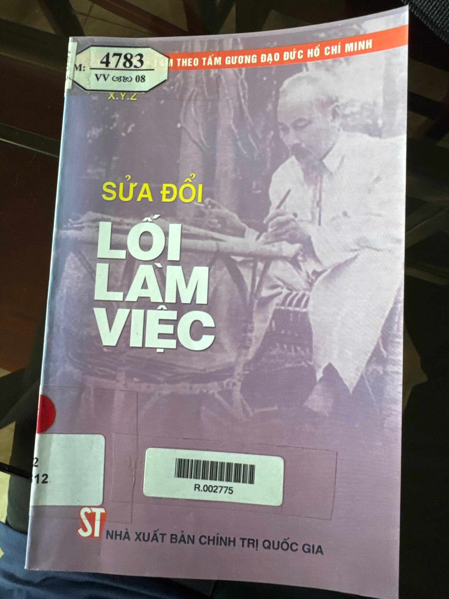

Read - Skill - Create
CĐ CNTTK25A - Môn Kỹ năng mềm
Đọc từ sách - Vận dụng vào CNTT
Tìm hiểu tác phẩm

Hình 1. Bìa sách Sửa đổi lối làm việc
Sửa đổi lối làm việc là tác phẩm của Hồ Chí Minh, được viết vào tháng 10 năm 1947 dưới bút danh X.Y.Z. Tác phẩm bàn về việc nhìn nhận những hạn chế trong tư tưởng, đạo đức, tác phong và phương pháp làm việc; từ đó điều chỉnh cách làm để công việc ngày càng tốt hơn.
Nhóm lựa chọn tìm hiểu tác phẩm vì những nội dung về tự nhìn nhận khuyết điểm, phê bình, sửa chữa và cách tổ chức công việc vẫn có thể gợi ra bài học khi học tập, làm đồ án và phối hợp trong nhóm sinh viên Công nghệ thông tin.
| Thông tin | Nội dung |
|---|---|
| Tác giả | Hồ Chí Minh, bút danh X.Y.Z. |
| Thời điểm viết | Tháng 10 năm 1947. |
| Thông tin in ấn | In 1.000 cuốn, khổ 13 x 20,5 cm, tại Nhà xuất bản Chính trị quốc gia. |
| Số đăng ký kế hoạch xuất bản | 257-2008/CXB/17-65/NXBCTQG. |
| Quyết định xuất bản | 2229-QĐ/NXBCTQGST, ngày 29-5-2008. |
| Nộp lưu chiểu | In xong và nộp lưu chiểu tháng 6 năm 2008. |
| Tổng số trang | 103 trang, theo thông tin ấn bản nhóm tham khảo. |
| Mã trên nhãn thư viện | R.002775. Đây là mã thư viện. |
Tác phẩm gồm sáu phần chính. Mỗi phần đề cập một khía cạnh của việc rèn luyện, sửa đổi và nâng cao hiệu quả công tác.
Tác phẩm gợi cho người đọc cách nhìn lại tư tưởng, thái độ và phương pháp làm việc của bản thân. Qua đó, người đọc có thể nhận ra những hạn chế, xem xét nguyên nhân và tìm cách khắc phục thay vì che giấu khuyết điểm hoặc chỉ phê bình người khác.
Khi liên hệ với học tập và công việc hiện nay, nhóm nhận thấy những nội dung này giúp mỗi người có ý thức trách nhiệm hơn, biết tiếp nhận góp ý, làm việc có phương pháp và chú ý đến kết quả thực tế.
01
Muốn tiến bộ, mỗi người cần nhận ra điểm chưa tốt của bản thân thay vì chỉ tìm lỗi ở người khác.
02
Góp ý cần hướng đến việc khắc phục vấn đề và giúp mọi người cùng tiến bộ.
03
Cần trình bày trung thực, rõ ràng và thể hiện trách nhiệm bằng kết quả công việc.
Nhóm ấn tượng với quan điểm phê bình cần hướng đến sửa chữa và tiến bộ. Khi phát hiện một hạn chế, chúng ta không nên dừng lại ở việc chỉ ra lỗi mà cần tìm nguyên nhân, trao đổi thẳng thắn và cùng đưa ra cách khắc phục.
Tiếp nhận góp ý khi kiểm tra code, tập trung vào lỗi cụ thể và cách cải thiện thay vì tự ái hoặc công kích người góp ý.
Kiểm tra lại các bước gây lỗi, tìm nguyên nhân, sửa đúng chỗ và chạy thử để xác nhận kết quả.
Phân công rõ ràng, theo dõi tiến độ, chủ động báo khó khăn và cùng trao đổi khi có thành viên chưa hoàn thành nhiệm vụ.
Trình bày đúng phần đã hoàn thành, nêu rõ phần còn hạn chế và không báo cáo kết quả khi chưa kiểm tra.
Halloween mini game
Chơi trò Halloween bên dưới để tích lũy điểm. Cứ đủ 20 điểm sẽ nhận 1 phiếu câu hỏi, tối đa 3 phiếu mỗi lượt chơi.
Chơi hết 40 giây trong khung game. Phiếu sẽ tự chuyển về website sau khi kết thúc.
Phiếu được lưu trên trình duyệt. Tải lại trang vẫn giữ số phiếu đã nhận.
Trắc nghiệm tương tác
Dùng 1 phiếu Halloween để mở câu hỏi. Trả lời xong mới chuyển sang câu tiếp theo.
Chưa có phiếu. Hãy chơi Halloween để kiếm phiếu nhé!
🎃 Đi săn kẹo để kiếm phiếuLớp cùng thử
Bốn tình huống dưới đây do nhóm xây dựng để liên hệ với việc học tập và làm đồ án CNTT.
Một thành viên gửi phần code nhưng chức năng không chạy theo yêu cầu.
Nhóm đã sửa nhiều lần nhưng lỗi vẫn quay lại.
bạn là 1 người viết code giỏi và luôn cho rằng cách làm của mình là hiệu quả và nhanh nhất tuy nhiên ngày bạn càng nhận được nhiều ý kiến đóng góp của bạn bè và đồng nghiệp về cách viết code nhằm cải thiện thêm hiệu suất bạn sẽ làm gì với những ý kiến trên.
bạn là 1 trưởng nhóm trong một dự án quan trọng, bạn phân công phần việc cho các thành viên trong nhóm một cách hợp lí nhưng có những thành viên chỉ làm hoa loa hoặc không hoàng thành bạn đành phải ôm hết phần việc còn lại để kịp tiến độ sau đó bạn sẽ làm gì?.
Nhóm thực hiện
Slogan: “Tích cực giơ tay vận may sẽ đến”
cảm ơn cô và các bạn đã tham khảo, góp ý để nhóm hoàn thiện sản phẩm.